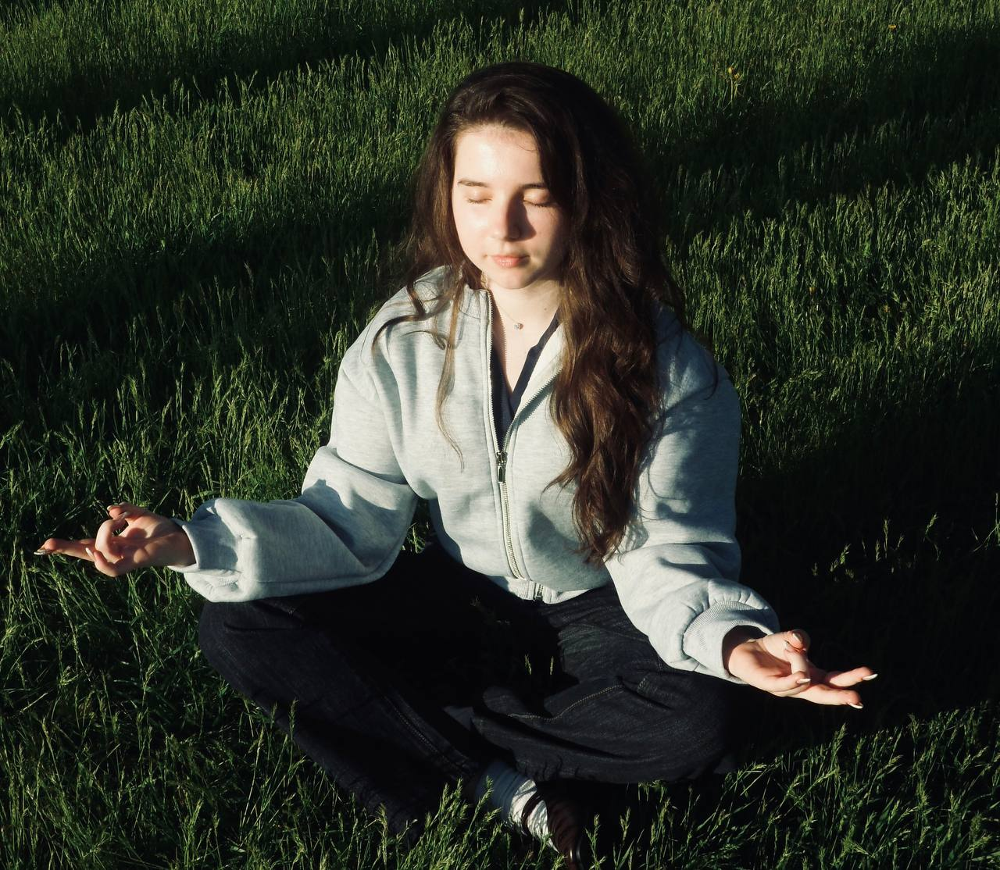
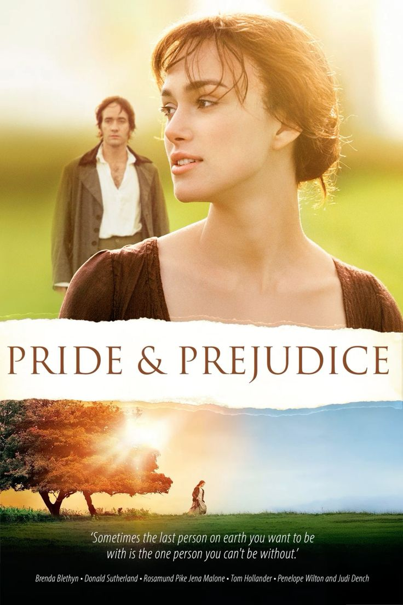
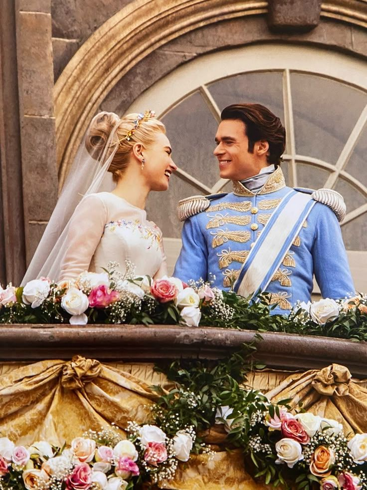
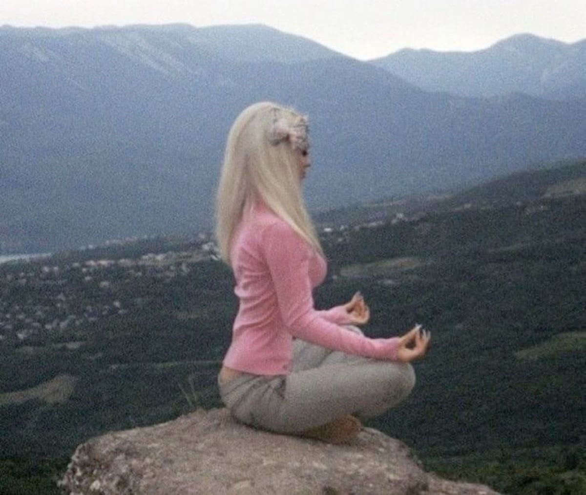
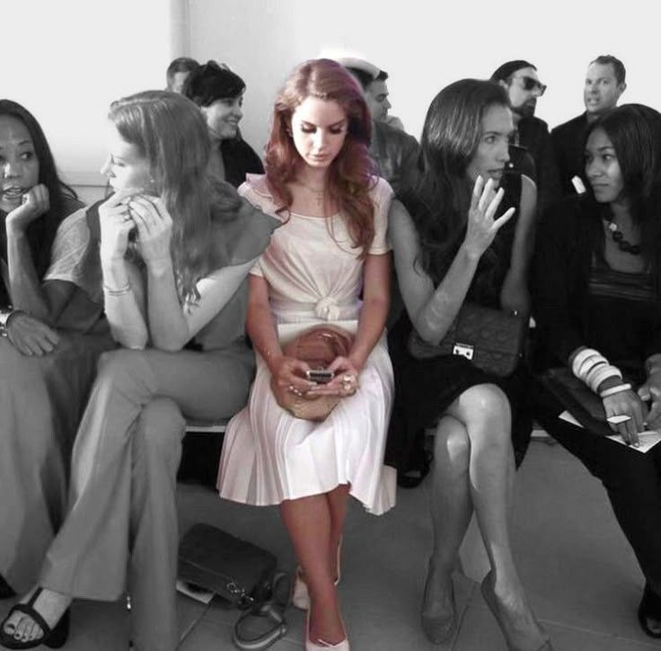

everyday zen
Yana Kolodiazhna
Студентка НТУ "ХПІ" (ІКМ-224в)
Народилася та живу у неймовірному Харкові. Захоплююсь програмуванням, естетикою буддизму та створенням комфортних просторів. Обожнюю знаходити красу в деталях.
Предмети (попередній семестр)
| Дисципліна | Викладач | Оцінка (Бал / ECTS) |
|---|---|---|
| Математична логіка, теорія алгоритмів та структури даних | Татарінова О.А. | 91 / A |
| Нарисна геометрія в задачах візуалізації | Федченко Г.В. | 75 / C |
| Організація баз даних | Мартиненко Г.Ю. | 100 / A |
| Програмування GUI | Дашкевич А.О. | 96 / A |
| Технології програмування | Шаповалова М.І. | 90 / A |
| Іноземна мова | Картун Н.О. | 90 / A |
| ОК СВУ | Ширяєва С.В. | 100 / A |
| Правознавство | Кузьменко О.В. | 100 / A |
Моя улюблена мудрість
"Якщо проблему можна вирішити — не варто про неї турбуватися. Якщо проблему вирішити неможливо — турбуватися про неї марно." — Тибетська мудрість (Шантідева)
Улюблені фільми

Гордість і упередження

Попелюшка (2015)
Про моє місто
Я народилася і живу в Харкові. Це ніколи не зламне місто та справжня студентська столиця України.
Мій настрій

Щаслива
Сьогодні щаслива, бо медитую та знаходжу внутрішній спокій

Сумна
Інколи буває сумно, але це просто час для роздумів та перезавантаження
Зараз
Зараз спокійна, створюю цей милий сайт та слухаю музику